Customer's SupportV. SURESH +91-9444959053
Working TimeMON–SAT: 10:00AM–06:00PM
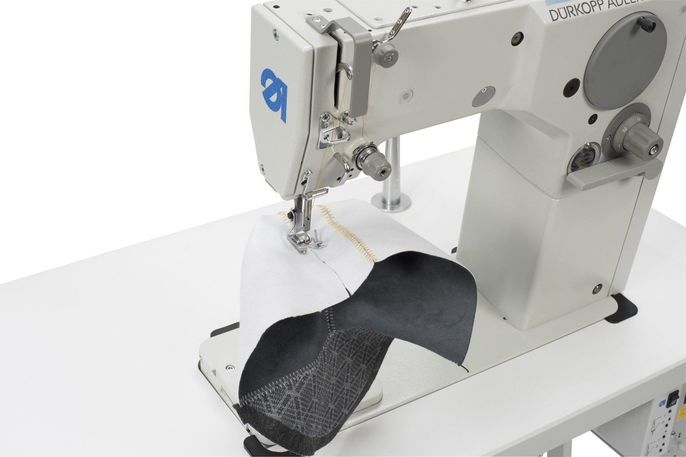
Post Bed Zig-Zag Machines. Available Post Height 182 mm or 294 mm.
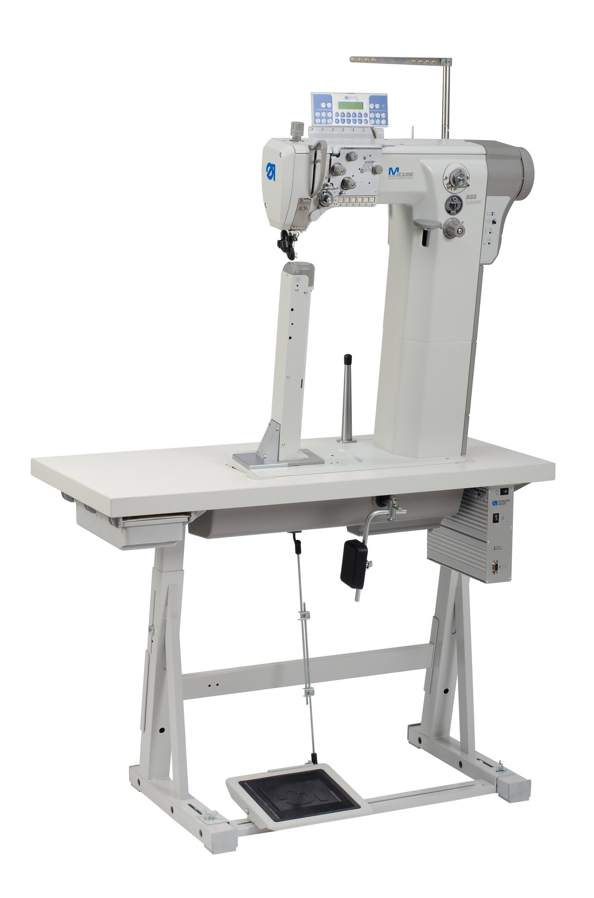
With its outstanding performance parameters this series is setting new standards as regards stitching operations in the shoe production. In conjunction with the needle feed and the driven roller foot, the double feeding of the wheel bottom feed ensures quiet and smooth sewing with exact stitch length, even when sewing over extremely thick spots. The manual back-tacking device ensures a "stitch-in-stitch" back-tacking. The special sewing kinematics allowing the use of a thread variety unrivalled so far makes this series a promising operating means of universal use. Automatic thread trimmer, presser-foot lift and back-tacking with push-button are decisive factors for high productivity.
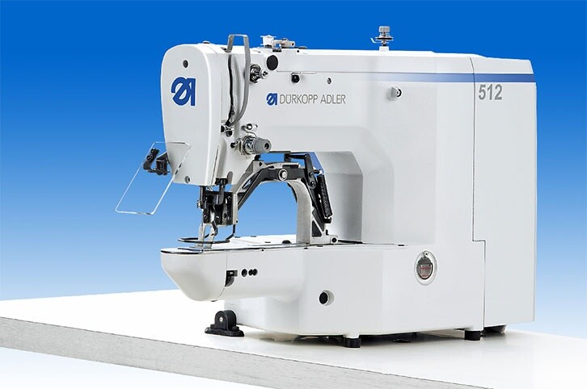
Typical field of application: Bar-tacking operations in outerwear.
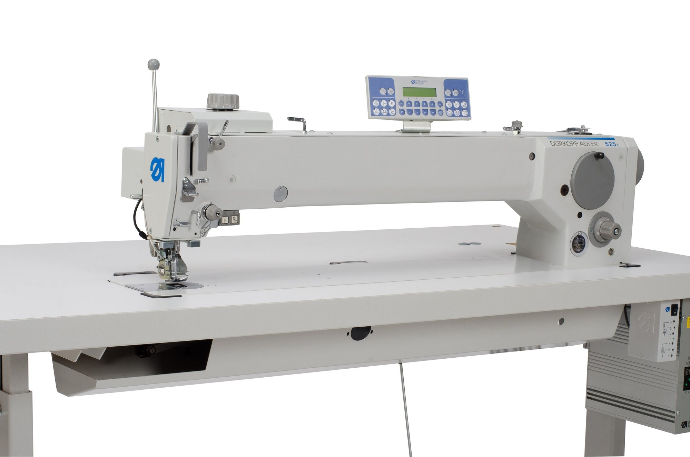
An intermittent puller, as optional equipment, allows a high performance. The feeding assistance from above avoids material shifting. The puller is available with different widths of feeding wheel. Easy operating of back-tacking and puller lifting by means of ergonomically designed push buttons.
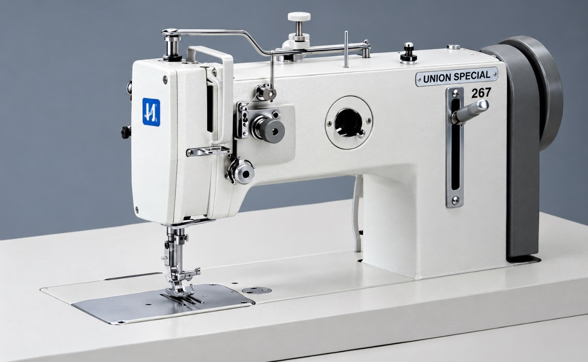
The robust and proven construction of the machine class 267 has made this Durkopp Adler machine an operating equipment for general stitching in medium weight like upholstery, leather articles and technical textiles.
The bottom feed, needle feed and alternating top feed as well as its high stroke of the sewing foot ensure a good material feed and an easy crossing of transversal seams. The vertical hook is suited for the manufacturing with solid sewing threads. The standard safety clutch helps to prevent hook damage or uncontrolled change of hook timing.
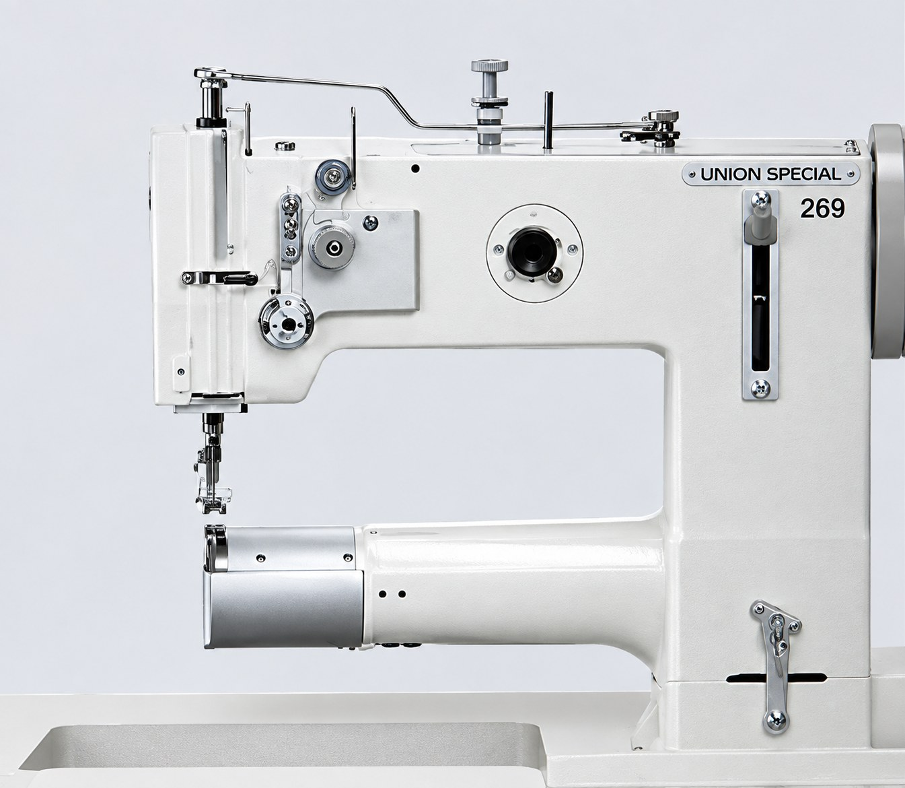
The robust and proven construction of the machine class 269 has made this Durkopp Adler machine an operating equipment for general stitching in medium weight to heavy-weight material like upholstery, leather articles and technical textiles.
Only cylinder arm machines allow special sewing operations to be carried out on three-dimensional or tubular shaped items when processing technical textiles, shoes, leather goods, bags and similar products. The robust 269 with bottom, needle and alternating top feed, large vertical hook and safety clutch offers ideal conditions for these requirements.
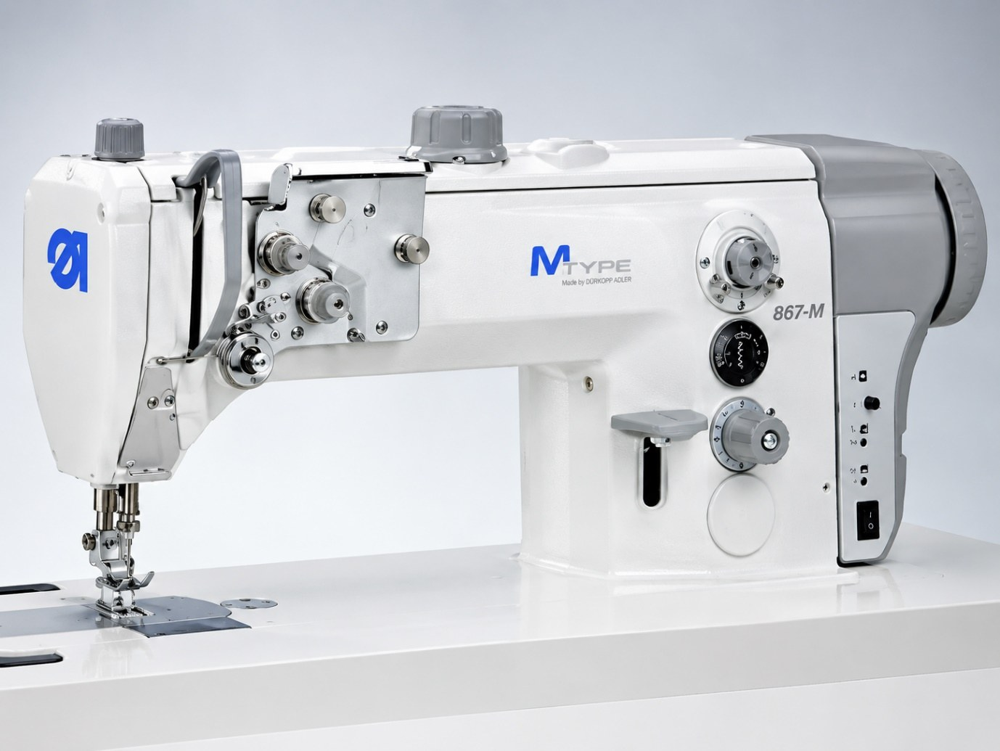
Single needle or twin needle lockstitch flat bed machines for medium-heavy duty applications.
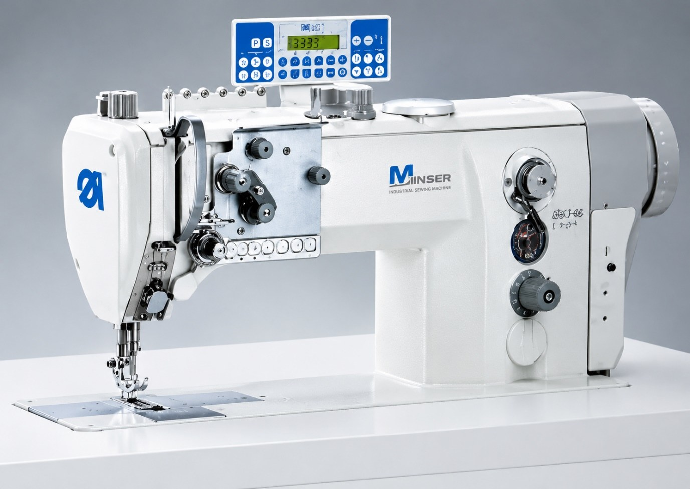
Single needle or twin needle lockstitch flat bed machine with integrated direct drive for medium-heavy duty applications.
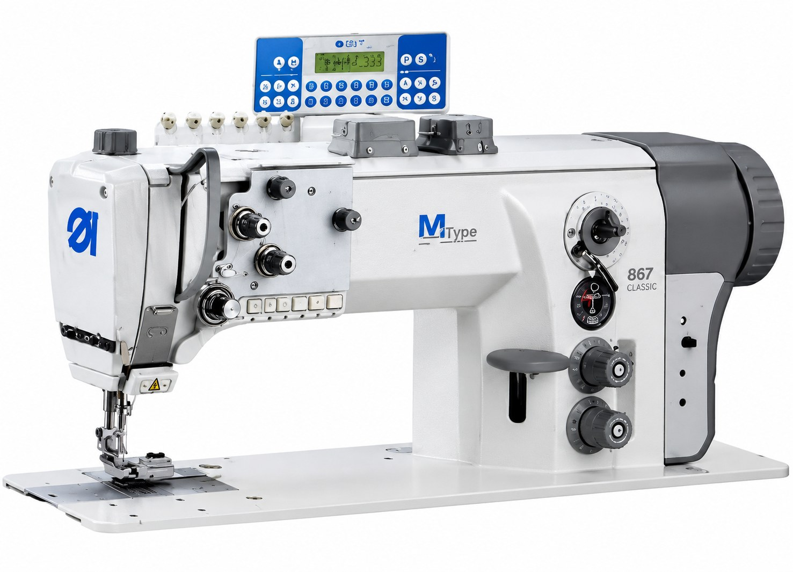
The special sewing processes “binding and / or trimming of material edges” involved in the manufacture of home and car upholstery and technical textiles call for particularly flexible machine concepts with maximum performance.
Owing to the robust, state-of-the-art design of the binding device and the edge trimmer the application-specific machine classes M-TYPE 867-M are particularly suitable for these special applications. The maintenance-free drive concept with integrated direct drive and the DAC classic control including control panel enable a maximum torque and high energy efficiency. Furthermore, the multitude of available sewing equipment and attachments contributes to an essential quality improvement and an increased manufacturing output.
The machines are equipped with the features corresponding to the M-TYPE CLASSIC version like thread trimmer, automatic back tacking, pneumatic sewing foot lift, integrated LED sewing lamp and maintenance indicator. The integrated second thread tension, quick stroke adjustment with speed adaptation enable highest productivity and quality.
The special machine with integrated direct drive and differentiable binding device for low-tension binding operations for applications with inner and outer radii; equipped with a pre-selectable second stitch length for a perfect, uniform seam appearance of narrow inner and outer radii.
Equipped with a moving binder and binding equipment for low-tension binding of e.g. car mats, tents, awning valances and convertible tops with open-edged or creased binding tapes.
867-392342-M (LG) – Your advantages
The special machine with integrated direct drive for simultaneous sewing and trimming; equipped with a robust, switchable edge trimmer for the flexible use with and without trimming of fabric edges.
Equipped with an engageable edge trimmer for displacement-free sewing and simultaneous trimming of padded home and car upholstery parts.
867-393342-M (VF) – Your advantages
The special machine with integrated direct drive for simultaneous trimming and binding; equipped with an engageable edge trimmer, a moving binder and a large waste chute.
Equipped with an engageable edge trimmer, moving binder and large waste chute for the efficient and precise trimming of e.g. quilts, sleeping bags and seat cushions in one operation.
867-394342-M (AE) – Your advantages
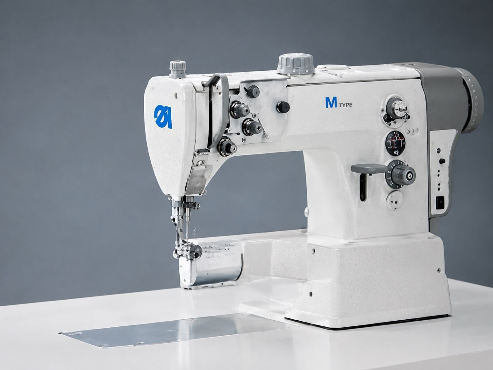
Single or twin needle lockstitch cylinder arm machines with vertical hook for universal use.
H-TYPE 967 – specialist for extreme sewing applications. Single needle lockstitch flatbed machines with barrel shuttle hook for heavy-weight sewing materials.
The large range of stitch lengths, the powerful material feed and the enormous penetration force of the H-TYPE offer ideal conditions for sewing heavy duty carrying belts. Due to the large sewing foot lift and the trouble-free processing of extreme material thicknesses, the H-TYPE is ideally suited for assembly seams in technical textiles. The large clearance of the H-TYPE 967-100382-100 facilitates the material handling when stitching through large-area and bulky workpieces.
With the optional equipment for heavy duty applications, e.g. for polishing wheels, an improved transport, a higher tractive force and uniform stitch tightening in very thick material thicknesses is achieved by triangular eccentrics. The transport kinematics combined with the XL barrel shuttle hook allows the processing of extremely thick sewing threads up to a maximum stitch length of 15 mm. The extreme alternating top feed up to 12 mm max. enables the safe climbing over differently high fabric plies.
The extremely sturdy design and the powerful triple feed ensure a maximum sewing quality, particularly when using extremely thick fabrics and threads.
Functional and decorative seams in three-dimensional heavy leather goods and technical textiles, as well as special sewing operations in the field of utility furniture, belong to the comprehensive application range of class 969.
Perfect topstitching seams in the leather goods sector – the specially designed sewing equipment offers ideal conditions for decorative seams, e.g. on high-quality bag handles. The particularly large clearance under the sewing head enables the processing of voluminous, tubular workpieces, e.g. attaching of base parts on golf bags.
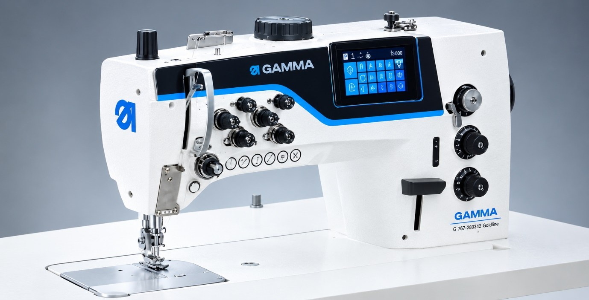
Single and twin needle lockstitch flat bed machines with integrated touch operation panel and in-build motor for medium-heavy duty applications.
The touch control panel integrated in the machine head enables optimum functionality and high operating convenience. The icon-oriented function panels allow easy setting of the relevant machine function. Multi-function panels allow associated parameter values to be adjusted simultaneously. Simple programs are programmed and sewn in automatic mode with detailed visualization of the sewing progress.
The integrated keypad with ergonomically arranged favourite button for easy activation of the basic functions (Silverline) as well as machine specific additional functions (Goldline). These include the mechanically predefined stitch lengths, the activation of a pneumatic additional thread tension, and the quick stroke adjustment function to the maximum value.
Large stitch length area of up to 9 millimetres – manual switching between two preselected stitch lengths (only Goldline machines) enables reproducible sewing results, for example when changing from an assembly seam to a topstitch seam.
Thread nipper for neat seam beginning on the upper side of the fabric (only for G767-180145) – no visible needle thread on the upper side of the material at the beginning of the seam. The thread nipper reliably ensures an optically perfect beginning of the seam.
The standard thread nipper of the automotive subclass guarantees a visually perfect seam begin on the top side. The short thread trimmer with a remaining thread length of approx. 5 mm saves the manual re-trimming of the remaining thread ends on the bottom side. Application example: Assembly seams on leather seat components in the automotive sector.
The integrated touch control panel enables comfortable operation and setting of the specific machine function. Targeted activation of functions in the sewing process is achieved by the 6-function keypad and the favourite key, ergonomically arranged in the working area. Application example: assembly and topstitching seams for medium-heavy applications.
Download PDF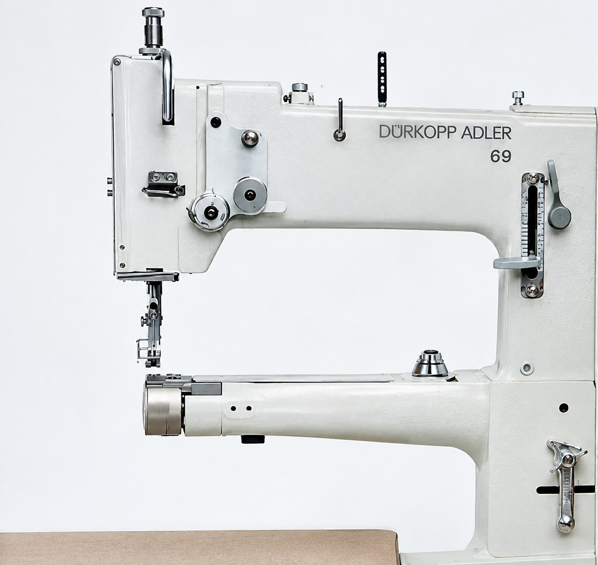
Single needle lockstitch cylinder arm machines for light to medium-weight material.
The robust and proven construction of class 69 has made this Durkopp Adler machines an operating equipment for general stitching in light-weight to medium-weight material like upholstery, leather articles and technical textiles.
Only cylinder arm machines allow special sewing operations to be carried out on three-dimensional or tubular shaped workpieces when processing e.g. technical textiles, shoes, leather goods or bags. The robust machines of class 69 with bottom feed, needle feed, alternating top feed and horizontal hook offer ideal conditions for these requirements, especially for small workpieces with narrow radii, close-to-the-edge and/or binding operations.
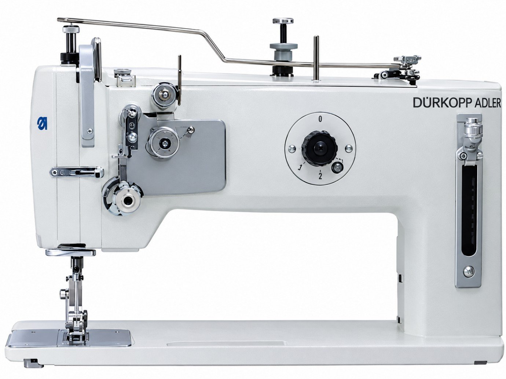
The robust and proven construction of the machine class 267 has made this Durkopp Adler machine an operating equipment for general stitching in medium weight like upholstery, leather articles and technical textiles.
The bottom feed, needle feed and alternating top feed as well as its high stroke of the sewing foot ensure a good material feed and an easy crossing of transversal seams. The vertical hook is suited for the manufacturing with solid sewing threads. The standard safety clutch helps to prevent hook damage or uncontrolled change of hook timing.
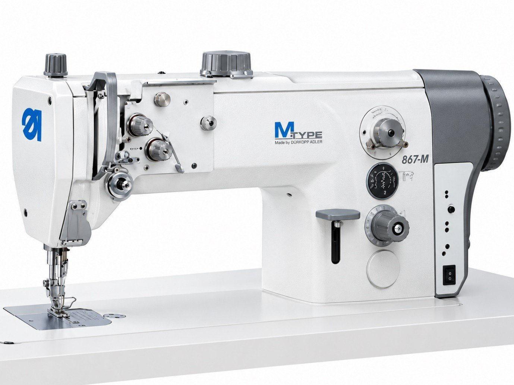
Single needle or twin needle lockstitch flat bed machines for medium-heavy duty applications.
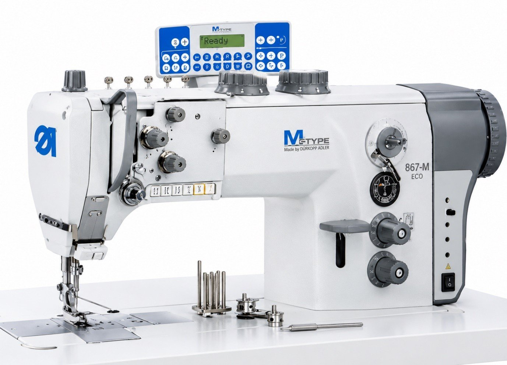
Single needle lockstitch flatbed machines for binding and trimming operations.
The special sewing processes “binding and / or trimming of material edges” involved in the manufacture of home and car upholstery and technical textiles call for particularly flexible machine concepts with maximum performance.
Owing to the robust, state-of-the-art design of the binding device and the edge trimmer the application-specific machine classes M-TYPE 867-M are particularly suitable for these special applications. The maintenance-free drive concept with integrated direct drive and the DAC classic control including control panel enable a maximum torque and high energy efficiency. Furthermore, the multitude of available sewing equipment and attachments contributes to an essential quality improvement and an increased manufacturing output.
The machines are equipped with the features corresponding to the M-TYPE CLASSIC version like thread trimmer, automatic back tacking, pneumatic sewing foot lift, integrated LED sewing lamp and maintenance indicator. The integrated second thread tension, quick stroke adjustment with speed adaptation enable highest productivity and quality.
The special machine with integrated direct drive and differentiable binding device for low-tension binding operations for applications with inner and outer radii; equipped with a pre-selectable second stitch length for a perfect, uniform seam appearance of narrow inner and outer radii.
Equipped with a moving binder and binding equipment for low-tension binding of e.g. car mats, tents, awning valances and convertible tops with open-edged or creased binding tapes.
867-392342-M (LG) – Your advantages
The special machine with integrated direct drive for simultaneous sewing and trimming; equipped with a robust, switchable edge trimmer for the flexible use with and without trimming of fabric edges.
Equipped with an engageable edge trimmer for displacement-free sewing and simultaneous trimming of padded home and car upholstery parts.
867-393342-M (VF) – Your advantages
The special machine with integrated direct drive for simultaneous trimming and binding; equipped with an engageable edge trimmer, a moving binder and a large waste chute.
Equipped with an engageable edge trimmer, moving binder and large waste chute for the efficient and precise trimming of e.g. quilts, sleeping bags and seat cushions in one operation.
867-394342-M (AE) – Your advantages
Single needle or twin needle lockstitch flat bed machine with integrated direct drive for medium-heavy duty applications.
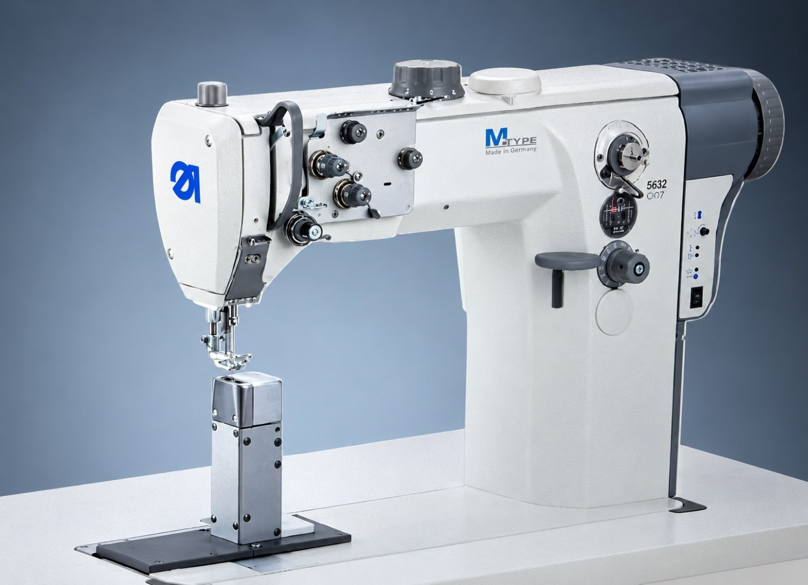
Single needle or twin needle lockstitch post bed machines for medium-heavy duty applications.
The high rate of decorative stitching operations in the production of car seat covers, dashboard coverings and door panels, as well as the fashion trend towards thick leather materials for upholstered furniture, require optimally adapted and high-performance operating means.
The single needle and twin needle post bed machines of the M-TYPE series have been especially designed for these manifold fields of application and offer maximum flexibility owing to their wide spectrum of performance. The great variety of equipment makes it possible to use these machines for a multitude of applications in the sector of medium-heavy duty decorative stitching. The design typical for the M-TYPE and the ergonomically arranged operating elements guarantee maximum ease of use for topstitching operations on three-dimensional workpieces.
The innovative drive concept of this machine class, consisting of a powerful sewing drive integrated in the machine head combined with a DAC classic control and the pertaining control panel OP1000, or a “DAC eco M-TYPE control”, provides these operating means with excellent performance parameters with regard to penetration power, dynamics and positioning accuracy. Special attention has been paid to quiet and low-vibration machine running as well as to high energy efficiency.
Due to outstanding performance parameters, the two subclasses 868-M of the program level M-TYPE ECO offer high functionality and flexibility at an attractive price. Three of the five 868-M subclasses of the program level M-TYPE CLASSIC have the following standard equipment: automatic sewing foot lift, integrated second stitch length, integrated second thread tension, quick stroke adjustment, automatic back tacking, thread trimmer as well as an integrated LED sewing lamp.
The subclasses 868-290321-M and 868-290341-M in the program level CLASSIC are offered without thread trimmer. Owing to special sewing equipment and the use of XXL hooks, class 868-290341-M is the ideal operating means when processing thick sewing threads.
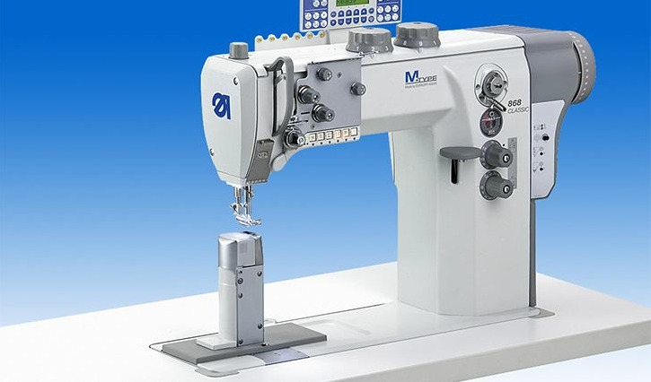
Single needle or twin needle lockstitch post bed machines for medium-heavy duty applications.
The high rate of decorative stitching operations in the production of car seat covers, dashboard coverings and door panels, as well as the fashion trend towards thick leather materials for upholstered furniture, require optimally adapted and high-performance operating means.
The single needle and twin needle post bed machines of the M-TYPE series have been especially designed for these manifold fields of application and offer maximum flexibility owing to their wide spectrum of performance. The great variety of equipment makes it possible to use these machines for a multitude of applications in the sector of medium-heavy duty decorative stitching. The design typical for the M-TYPE and the ergonomically arranged operating elements guarantee maximum ease of use for topstitching operations on three-dimensional workpieces.
The innovative drive concept of this machine class, consisting of a powerful sewing drive integrated in the machine head combined with a DAC classic control and the pertaining control panel OP1000, or a “DAC eco M-TYPE control”, provides these operating means with excellent performance parameters with regard to penetration power, dynamics and positioning accuracy. Special attention has been paid to quiet and low-vibration machine running as well as to high energy efficiency.
Due to outstanding performance parameters, the two subclasses 868-M of the program level M-TYPE ECO offer high functionality and flexibility at an attractive price. Three of the five 868-M subclasses of the program level M-TYPE CLASSIC have the following standard equipment: automatic sewing foot lift, integrated second stitch length, integrated second thread tension, quick stroke adjustment, automatic back tacking, thread trimmer as well as an integrated LED sewing lamp.
The subclasses 868-290321-M and 868-290341-M in the program level CLASSIC are offered without thread trimmer. Owing to special sewing equipment and the use of XXL hooks, class 868-290341-M is the ideal operating means when processing thick sewing threads.
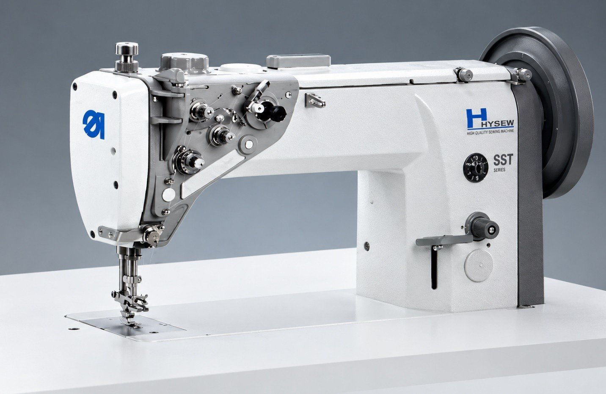
Single needle lockstitch flatbed machines with barrel shuttle hook for heavy-weight sewing materials. H-TYPE 967 – specialist for extreme sewing applications.
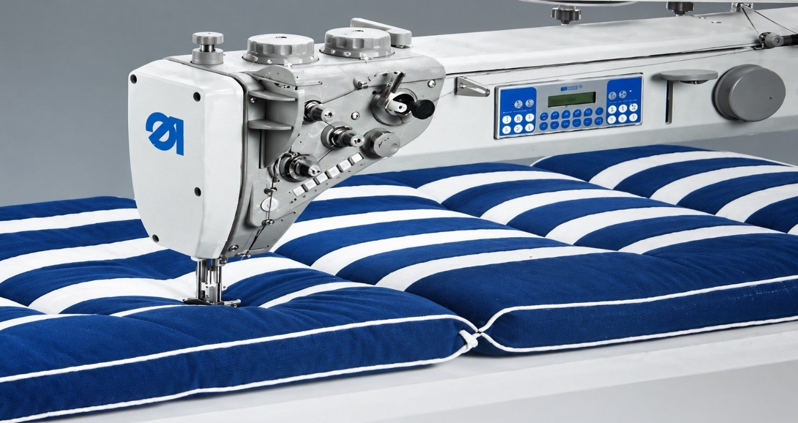
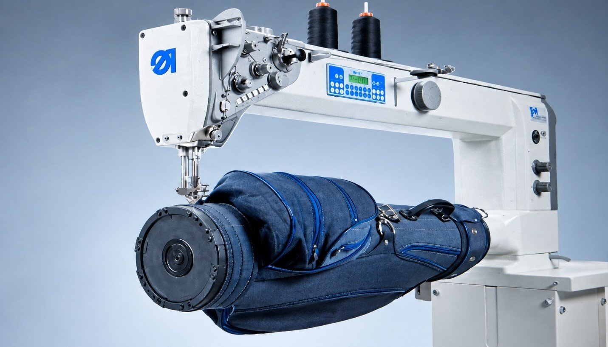
The extremely sturdy design and the powerful triple feed ensure a maximum sewing quality, particularly when using extremely thick fabrics and threads.
Functional and decorative seams in three-dimensional heavy leather goods and technical textiles, as well as special sewing operations in the field of utility furniture, belong to the comprehensive application range of class 969.
Perfect topstitching seams in the leather goods sector – the specially designed sewing equipment offers ideal conditions for decorative seams, e.g. on high-quality bag handles. The particularly large clearance under the sewing head enables the processing of voluminous, tubular workpieces, e.g. attaching of base parts on golf bags.
Download PDF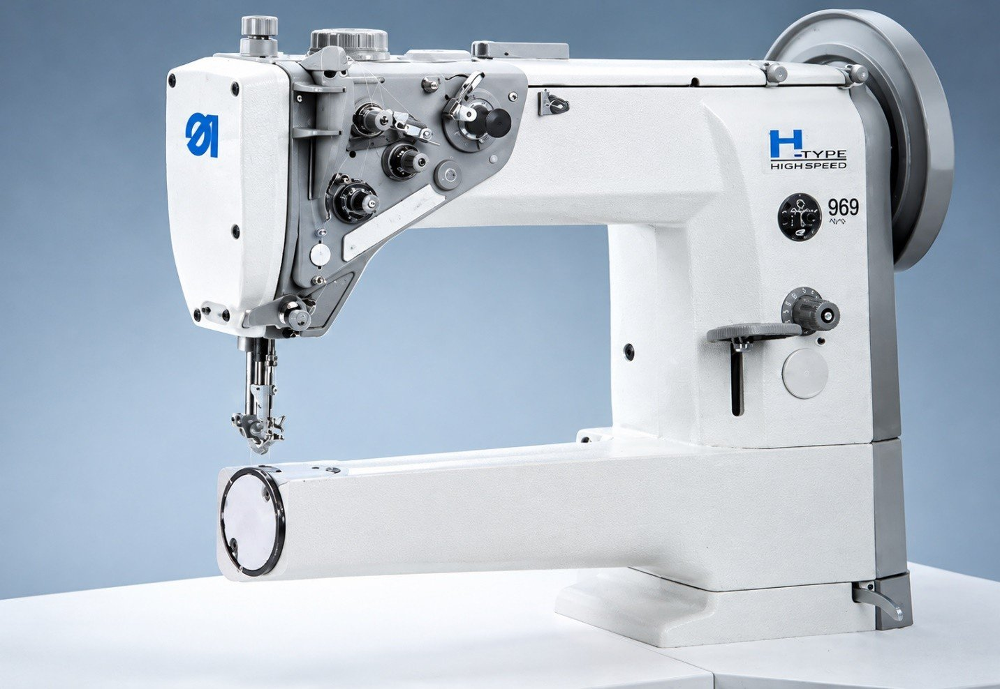